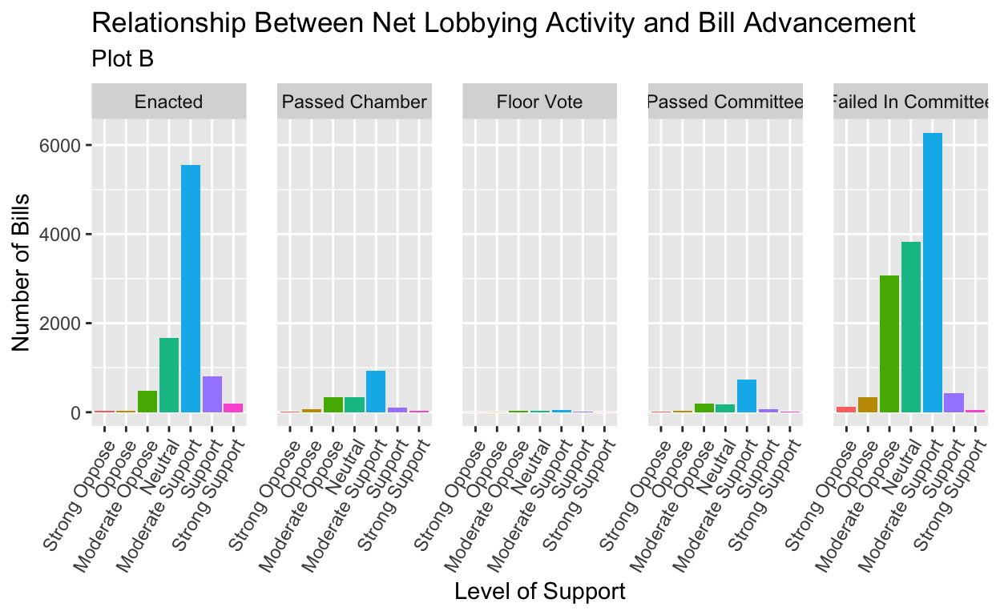

Gov 50 Final Project
As I entered advocacy spaces in local and state government, advocacy groups emphasized the centrality of communicating policy positions to legislators in lobbying processes (ie public comment, private meetings, and private correspondents with the legislator’s office). Indeed, some groups claimed that packing a committee room was ultimately a more influential factor in a bill’s prospect than partisanship, even though my home-state of Virginia has experienced a significant rise in partisanship in its legislature.
While the centrality of lobbying is widely accepted in local and state politics, the claim is grounded in anecdotal evidence - anecdotal evidence that may no longer hold true in an increasingly hyper-partisan political environment. In this analysis, I consider if more civic engagements lead to bill advancement. Using the replication data from “Does Lobbying Affect Bill Advancement? Evidence from Three State Legislatures,” I plan to treat the number of positions taken as my independent variable, and the bill’s status as my dependent variable. I hypothesize that bills that have higher numbers of supportive positions will have more positive advancement outcomes, for higher public engagement indicates that the bill is a public priority. Further, I hypothesize that while there will still be a positive relationship between the number of supportive lobbyists and positive advancement outcomes for bills, this relationship will weaken as the process advances, simply because lobbyist relationships may not be as strong outside of specialized committees. Ultimately, this analysis can help non-profits, advocacy groups, and other organized interests guide their advocacy strategy.
I use the replication data from “Does Lobbying Affect Bill Advancement? Evidence from Three State Legislatures” (Butler and Miller). The dataset focuses on over 26,000 bills from Colorado, Nebraska, and Wisconsin. Lobbying data was collected through public disclosure forms, while outcomes were collected through the state legislature website. Researchers used a longitudinal cross-sectional design.
It includes a number of variables, a full description of which is included in appendix A. For the purposes of this analysis, I focus on the following variables:
state: The state the bill was introduced in
session: The year of the legislative session
enacted: 1 if signed into law, 0 if not.
passed_chamber: 1 if bill passed the legislative chamber, 0 if not.
reached_floor: 1 if bill reached the full floor of the legislative chamber, 0 if not.
passed_committee: 1 if bill passed committee, 0 if not.
num_for_before_final: Number of interests who supported bill at any point in legislative process.
num_against_before_final: Number of interests who opposed bill at any point in legislative process.
num_other_before_final: Number of interests who spoke on bill, but did not speak for or against bill at any point in legislative process.
for_against_balance_before_final: Difference between num_for_before_final and num_against_before_final
for_against_final: The sum of the number of interests taking positions for or against the bill
chamber_maj_pty: The party in control of chamber.
intro_pid: Partisanship of all of bills sponsors, coded as “majority” if only majority party members sponsor the bill, “minority” if only minority members sponsor the bill, and “indeterminate” if legislators from both majority and minority sponsor bill.
maj_leader_intro: 1 if bill introduced by majority leader, 0 if not.
min_leader_intro: 1 if bill introduced by minority leader, 0 if not.
key_vote: 1 if bill was deemed key vote by Project Smart, 0 if not.
I treat enacted, and a newly mutated version of enacted that assigns it the values “Enacted” and “Failed,” as my primary outcome variable. This is for two reasons. Practically, there are far less “Passed Chamber”, “Floor Vote”, and “Passed Committee” rows than the “Enacted” and “Failed In Committee” rows (see Chart A). Second, and more substantively, though interest groups may be interested to know at what part of the legislative process lobbying activities are successful, they are ultimately are more concerned with whether a bill becomes law or not. In other words, a bill that dies on the floor by one vote versus a bill that didn’t even make it out of committee has the same ultimate impact: they do not become law.
Moreover, because it is informative to understand when lobbying’s impact diminishes, I will also treat passed_chamber, reached_floor, and passed_committee as relavent outcome variables.
I also create a number of new variables, largely to assist in drawing plots, as many outcome variables are binary variables that can make it difficult to visualize relationships. First, I create the variable advancement_breakdown. advancement_breakdown will be used to visualize a bill’s advancement more in-depth. It sorts bills into five categories, based on their final status: “Enacted”, “Passed Chamber”, “Floor Vote”, “Passed Committee”, and “Failed In Committee”.
The advantage of the advancement_breakdown variable is that it combines the enacted, passed_chamber, reached_floor, and passed_committee variables into one succinct variable that summarizes a bill’s status, without categorizing bills with divergent outcomes into the same outcome, as the enactment variable does (ie enacted would categorize a bill that made it to out of the chamber but failed to be enacted as the same as a bill that didn’t even make it out committee). It is key that interest groups understand when, if ever, lobbying becomes less effective, for it may necessitate a switch in legislative advocacy approaches.
My primary independent variable will be for_against_balance_before_final, as a means to gauge the extent to which organized interests supported a bill.
Potential confounders include key_vote, maj_leader_intro, intro_pid, and for_against_final. To include intro_pid in regression analysis, I mutate it to a binary variable intro_maj, where 1 indicates that the bill’s sponsors belong to the majority party, and 0 in all other cases.
Finally, for visualization purposes, I categorize bills into “Strong Oppose” should a net 20 or more lobbyists oppose it (for_against_balance_before_final <= -20), “Oppose” should a net 10-20 lobbyists oppose it, “Neutal” should the bill have 0 net lobbyists for it, “Moderate Support” should the bill have a net 1-10 lobbyists for it, “Support” should the bill have a net 10-20 lobbyists support it, and “Strong Support” should the bill have 20 or more net lobbyists support it.
lobbying_activities <- read_csv("dataverse_files/lobbying_on_advancement.csv")
lobbying_activities$enacted <- as.numeric(lobbying_activities$enacted)
lobbying_activities$passed_chamber <- as.numeric(lobbying_activities$passed_chamber)
lobbying_activities$passed_committee <- as.numeric(lobbying_activities$passed_committee)
lobbying_activities$for_against_balance_before_final <- as.numeric(lobbying_activities$for_against_balance_before_final)
lobbying_activities$reached_floor <- as.numeric(lobbying_activities$reached_floor)
lobbying_activities <- lobbying_activities |> mutate(total_advancement = enacted + passed_chamber + passed_committee + reached_floor)
lobbying_activities <- lobbying_activities |> mutate(advancement_breakdown = case_when(
total_advancement == 4 ~ "Enacted",
total_advancement == 3 ~ "Passed Chamber",
total_advancement == 2 ~ "Floor Vote",
total_advancement == 1 ~ "Passed Committee",
total_advancement == 0 ~ "Failed In Committee"))
lobbying_activities <- lobbying_activities |> mutate(level_of_support = case_when(
for_against_balance_before_final <= -20 ~ "Strong Oppose",
for_against_balance_before_final <= -10 & for_against_balance_before_final > -20 ~ "Oppose",
for_against_balance_before_final < 0 & for_against_balance_before_final > -10 ~ "Moderate Oppose",
for_against_balance_before_final == 0 ~ "Neutral",
for_against_balance_before_final > 0 & for_against_balance_before_final < 10 ~ "Moderate Support",
for_against_balance_before_final >= 10 & for_against_balance_before_final < 20 ~ "Support",
for_against_balance_before_final >= 20 ~ "Strong Support"))
lobbying_activities <- lobbying_activities |>
mutate(final_status = case_when(
enacted == 1 ~ "Enacted",
enacted == 0 ~ "Failed"))
lobbying_activities <- lobbying_activities |> mutate(level_of_support = fct_relevel(level_of_support, c("Strong Oppose", "Oppose", "Moderate Oppose", "Neutral", "Moderate Support", "Support", "Strong Support")))
lobbying_activities <- lobbying_activities |> mutate(advancement_breakdown = fct_relevel(advancement_breakdown, c("Enacted", "Passed Chamber", "Floor Vote", "Passed Committee", "Failed In Committee")))
lobbying_activities <- lobbying_activities |> mutate(final_status = fct_relevel(final_status, c("Failed", "Enacted")))
lobbying_activities <- lobbying_activities |>
mutate(intro_maj =if_else(
intro_pid == "majority", "1", "0"))
lobbying_activities$intro_maj <- as.numeric(lobbying_activities$intro_maj)lobbying_activities |> group_by(advancement_breakdown) |> summarize(n=n()) |> pivot_wider(names_from = advancement_breakdown, values_from = n) |> mutate("Combined" = `Passed Chamber` + `Floor Vote` + `Passed Committee`) |> select(Enacted, Combined, `Failed In Committee`) |> knitr::kable(col.names = c("Number of Bills Enacted", "Combined Number of Bills that Passed Chamber, had a Floor Vote, or Passed Committee", "Number of Bills That Failed In Committee"))| Number of Bills Enacted | Combined Number of Bills that Passed Chamber, had a Floor Vote, or Passed Committee | Number of Bills That Failed In Committee |
|---|---|---|
| 8752 | 3187 | 14112 |
plotA <-
ggplot(lobbying_activities, mapping = aes(x = level_of_support)) +
geom_bar(position = "dodge") +
facet_wrap(~ final_status, ncol = 2) +
theme(axis.text.x = element_text(angle = 60, vjust = 1, hjust =1), panel.spacing = unit(1, "lines")) +
labs(
x = "Level of Support",
y = "Number of Bills",
title = "Relationship Between Net Lobbying Activity and Final Bill Status",
subtitle = "Plot A")
plotB <- ggplot(lobbying_activities, mapping = aes(x = level_of_support, fill = level_of_support)) + geom_bar(position = "dodge") +
facet_wrap(~ advancement_breakdown, ncol = 5) + theme(axis.text.x = element_text(angle = 60, vjust = 1, hjust =1), panel.spacing = unit(1, "lines")) +
labs(
x = "Level of Support",
y = "Number of Bills",
title = "Relationship Between Net Lobbying Activity and Bill Advancement",
subtitle = "Plot B") +
guides(fill = "none")
plotAplotB
The summary plots suggests that lobbying has some impact on bill advancement, but its effects are still somewhat unclear. Plot A clearly demonstrates that more bills enacted generally face limited opposition. Likewise, Plot A also demonstrates that bills that fail are more likely to experience more lobbying opposition.
Plot B’s results are more unclear. On its surface, it seems to suggest that bills that experience some advancement, but are ultimately not implemented, are more likely to expeirience moderate to neutral reactions, compared to bills that are enacted or bills that fail in committee. This may suggest that even if a bill experiences limited oppositions, it nonetheless is less likely to be enacted without strong backers.
singregression_passfail <- lm(enacted ~ for_against_balance_before_final, data = lobbying_activities)
singregression_passfail
Call:
lm(formula = enacted ~ for_against_balance_before_final, data = lobbying_activities)
Coefficients:
(Intercept) for_against_balance_before_final
0.30267 0.01895 signregression_passfailvarnames <- c("(Intercept)" = "Intercept",
"for_against_balance_before_final" = "Net Lobbyist Positions Variable")
modelsummary::modelsummary(singregression_passfail, statistic = "p.value",
gof_map = c("nobs", "r.squared", "adj.r.squared"),
coef_map = signregression_passfailvarnames)| (1) | |
|---|---|
| Intercept | 0.303 |
| (<0.001) | |
| Net Lobbyist Positions Variable | 0.019 |
| (<0.001) | |
| Num.Obs. | 26051 |
| R2 | 0.057 |
| R2 Adj. | 0.057 |
The intercept is 0.303, meaning that, should a bill have net 0 lobbying positions (ie the amount of negative lobbying positions equals the amount of positive lobbying positions), then it has a 30.3 percent chance of passing. The slope is 0.019, meaning that, for each additional supportive lobbying position, the bills chances of passing increase by 1.9 percent.
The P-value is less than 0.001, which means that this regression is statistically significant, at an alpha level of 0.05. In other words, this p value functionally means that should the amount of lobbying positions have no impact on a bill’s chances of passage, there would be a less than 0.001 chance of collecting the results the expierementers did. Still, this cannot be interpreted causally: this was a cross-sectional, not experimental, design.
While interest groups are ultimately interested in a bill’s final status, they nonetheless may be interested to know if lobbying can have a divergent impact on different stages in the process. I thus also run three linear regression that analyze lobbying’s impact on the three bill stages collected within this data frame: a bill passing out of committee, a bill making it onto a floor, and a bill making it out of the chamber.
singregression_passed_committee <- lm(passed_committee ~ for_against_balance_before_final, data = lobbying_activities)
singregression_passed_committee_varnames <- c("(Intercept)" = "Intercept",
"for_against_balance_before_final" = "Net Lobbyist Positions Variable")
modelsummary::modelsummary(singregression_passed_committee, statistic = "p.value",
gof_map = c("nobs", "r.squared", "adj.r.squared"),
coef_map = singregression_passed_committee_varnames)| (1) | |
|---|---|
| Intercept | 0.427 |
| (<0.001) | |
| Net Lobbyist Positions Variable | 0.018 |
| (<0.001) | |
| Num.Obs. | 26051 |
| R2 | 0.046 |
| R2 Adj. | 0.046 |
On lobbying’s impact on a bill’s chances of passing committee, it has an intercept of 0.379. This means that, should a bill have net 0 lobbying positions (ie the amount of negative lobbying positions equals the amount of positive lobbying positions), then it has a 37.9 percent chance of passing.The slope is 0.018, meaning that, for each additional supportive lobbying position, the bills chances of passing out of committee increase by 1.8 percent.
The P-value is less than 0.001, which means that this regression is statistically significant, at an alpha level of 0.05. In other words, this p value functionally means that should the amount of lobbying positions have no impact on a bill’s chances of passage out of committee, there would be a less than 0.001 chance of collecting the results the expierementers did.
lobbying_activities_floor_vote <- lobbying_activities |> filter(passed_committee == 1)
singregression_reached_floor <- lm(reached_floor ~ for_against_balance_before_final, data = lobbying_activities_floor_vote)
singregression_reached_floor_varnames <- c("(Intercept)" = "Intercept",
"for_against_balance_before_final" = "Net Lobbyist Positions Variable")
modelsummary::modelsummary(singregression_reached_floor, statistic = "p.value",
gof_map = c("nobs", "r.squared", "adj.r.squared"),
coef_map = singregression_reached_floor_varnames)| (1) | |
|---|---|
| Intercept | 0.884 |
| (<0.001) | |
| Net Lobbyist Positions Variable | 0.004 |
| (<0.001) | |
| Num.Obs. | 11939 |
| R2 | 0.007 |
| R2 Adj. | 0.006 |
On lobbying’s impact on a bill’s chances of getting to the floor, I filter out the results so that we are only looking at bills that can be considered for floor consideration (ie those that passed out of committee). As the chart shows, the intercept is 0.884 - meaning that, should a bill already have passed committee, and there is no net change in the lobbying position, we would expect there to be an 88.4 percent chance of the bill appearing on the floor. The slope is 0.004, meaning that we would expect there to a 0.4 percent increase in the chances of a bill appearing on the floor, for each one additional supportive lobbying position.
The P-value is less than 0.001, which means that this regression is statistically significant, at an alpha level of 0.05. In other words, this p value functionally means that should the amount of lobbying positions have no impact on a bill’s chances of getting onto the floor, there would be a less than 0.001 chance of collecting the results the expierementers did.
chamber_vote <- lobbying_activities |> filter(reached_floor == 1)
singregression_passed_chamber <- lm(passed_chamber ~ for_against_balance_before_final, data = chamber_vote)
singregression_passed_committee
Call:
lm(formula = passed_committee ~ for_against_balance_before_final,
data = lobbying_activities)
Coefficients:
(Intercept) for_against_balance_before_final
0.42675 0.01795 singregression_passed_chamber_varnames <- c("(Intercept)" = "Intercept",
"for_against_balance_before_final" = "Net Lobbyist Positions Variable")
modelsummary::modelsummary(singregression_passed_chamber, statistic = "p.value",
gof_map = c("nobs", "r.squared", "adj.r.squared"),
coef_map = singregression_passed_chamber_varnames)| (1) | |
|---|---|
| Intercept | 0.985 |
| (<0.001) | |
| Net Lobbyist Positions Variable | 0.001 |
| (<0.001) | |
| Num.Obs. | 10704 |
| R2 | 0.001 |
| R2 Adj. | 0.001 |
To analyze lobbying’s impact on a bill’s chances to to pass a legislative chamber, I only consider those bills that have the potential to pass a chamber (ie bills that have apoeared on the floor). Here, the intercept is 0.985 - meaning that once a bill appears on the floor, it has a 98.5 percent chance of passing the chamber, even if there is no change in the net lobbying positions. The slope is 0.001 - meaning that for each additionalsupportive lobbying position, we can expect a bill’s chances to advance out of the chamber to improve by one percent.
The P-value is less than 0.001, which means that this regression is statistically significant, at an alpha level o 0.05. In other words, this p value functionally means that should the amount of lobbying positions have no impact on a bill’s chances of advancing out of the chamber, there would be a less than 0.001 chance of collecting the results the experimenters did.
multiregression <- lm(enacted ~ for_against_balance_before_final + intro_maj + for_against_final + key_vote + maj_leader_intro, data = lobbying_activities)
varnames2 <- c("(Intercept)" = "Intercept",
"for_against_balance_before_final" = "Net Lobbying Positions",
"intro_maj" = "Introducing Party Majority",
"for_against_final" = "Sum of all lobbying positions",
"key_vote" = "Considered Key Vote",
"maj_leader_intro" = "Introduced by Majority Leader")
modelsummary::modelsummary(multiregression, statistic = "p.value",
gof_map = c("nobs", "r.squared", "adj.r.squared"),
coef_map = varnames2)| (1) | |
|---|---|
| Intercept | 0.225 |
| (<0.001) | |
| Net Lobbying Positions | 0.013 |
| (<0.001) | |
| Considered Key Vote | 0.368 |
| (<0.001) | |
| Introduced by Majority Leader | 0.041 |
| (<0.001) | |
| Num.Obs. | 26051 |
| R2 | 0.091 |
| R2 Adj. | 0.091 |
The intercept is .225, which implies that when all other variables are 0, a bill has a 22.5 percent chance of enactment Within the confounder variables, kwy vote has the greatest slope, at 0.368, which means that, holding all else constant, being considered a key vote is expected to imporve a bill’s chance at enactment by 36.8 percent. Moreover, introduced by majority leader also has a greater magnitude than lobbying at 0.041, which means that, holding all else constant, should a bill be introduced by the majority leader, it will improve its chances of passing by 4.1 percent. Finally, the slope of the net lobbying positions is 0.013, which means that, holding all else constant, we expect each additional supportive position to increase a bill’s chances of passage by 1.3 percent,
Because all the coeficients in this table have a p value of less than 0.001, they are significant, at an alpha level of 0.05.
In this paper, I analyzed the effect lobbying had on a bill’s chances of passage.
Based on linear regression, there was some evidence in favor of my original hypothesis that an increase in the number of pro-lobbyist positions would improve a bill’s chances of passing. Earlier, for example, this analysis found that for each additional supportive lobbying position, the bills chances of being enacted would increase by 1.9 percent. Further, the analysis also found that the effects of each additional supportive lobbyist position were stronger early on - supporting the second part of my hypothesis, where lobbying would have a greater impact in the earlier stages of the process.
However, it seems that there are a number of other covariables that have a much greater impact on the chances of a bill’s passage than lobbying. Being considered a key vote, for example, is expected to imporve a bill’s chance at enactment by 36.8 percent, while being introduced by the majority leader was also associated with a stronger expected increase in a bill’s chances of enactment compared to each additional lobbying position.
There were a number of key limitations with this analysis. First, linear regression is not the best regression type to analyze binary outcome variables. Second, treating each additional supportive lobbying position equal - as this analysis does - ignores that different stakeholders have different levels of power.
In the future, I’d like to shift the independent variable to the amount each lobbying organization donated in each election, with the dependent variable becoming the percentage of priorities implemented in each legislative session. Such an analysis would allow for more effective linear regression, and account for the reality that each lobbyist is not created equally. In addition, it would be interesting to expand this analysis beyond lobbying, to include public comment portions in state legislatures. Such an analysis would allow for another potential confounding variable to be considered.
Butler, D. M., & Miller, D. R. (2022). Does Lobbying Affect Bill Advancement? Evidence from Three State Legislatures. Political Research Quarterly, 75(3), 547-561. https://doi-org.ezp-prod1.hul.harvard.edu/10.1177/10659129211012481
state: The state the bill was introduced in
session: The year of the legislative session
statesession: A combined variable for state and session
bill_number: The number of the bill.
legtype: The type of legislation (ie House Bill, Senate Bill, etc.)
enacted: 1 if signed into law, 0 if not.
passed_chamber: 1 if bill passed the legislative chamber, 0 if not.
reached_floor: 1 if bill passed the full floor of the legislative chamber, 0 if not.
passed_committee: 1 if bill passed committee, 0 if not.
num_for_before_committee: Wisconsin Only - number of interests who supported bill in committee
num_against_before_committee: Wisconsin Only - number of interests who opposed bill in committee
num_for_before_floor: Wisconsin Only - number of interests who supported bill before it reached the floor
num_for_before_pass: Wisconsin Only - number of interests who supported bill before it passed in chamber of origin
num_against_before_pass: Wisconsin Only - number of interests who opposed bill before it passed in chamber of origin
num_for_before_final: Number of interests who supported bill at any point in legislative process.
num_against_before_final: Number of interests who opposed bill at any point in legislative process.
num_other_before_final: Number of interests who spoke on bill, but did not speak for or against bill at any point in legislative process.
for_against_balance_before_final: Difference between num_for_before_final and num_against_before_final
for_against_final:The sum of the number of interests taking positions for or against the bill
for_against_pass: Wisconsin only. Indicator for lobbying patterns on bills before they pass chamber of origin. Takes on values of none, only for, only against, and for and against
for_against_floor: Wisconsin only. Indicator for lobbying patterns on bills before they reach chamber floor. Takes on values of none, only for, only against, and for and against
for_against_committee: Wisconsin only. Indicator for lobbying patterns on bills during committee process. Takes on values of none, only for, only against, and for and against
for_against_other_final: Indicator of the pattern of lobbying on the bill by the end of the legislative session with other" included; takes on values of none, only for, only against, for and against, other, for and other, against and other, and for, against, and other. `for_against_other_pass`: Wisconsin only. Indicator of the pattern of lobbying on the bill before it passes in its chamber of origin withother” included; takes on values of none, only for, only against, for and against, other, for and other, against and other, and for, against, and other
for_against_other_floor: Wisconsin only. An indicator of the pattern of lobbying on the bill before reached the floor in its chamber of origin with `other" included; takes on values of none, only for, only against, for and against, other, for and other, against and other, and for, against, and otherchamber_pol: Chamber polarization from Shor and McCarty (2011).chamber_maj_pty: The party in control of chamber.intro_pid: Partisanship of all of bills sponsors, coded as "majority" if only majority party members sponsor the bill, "minority" if only minority members sponsor the bill, and "indeterminate" if legislators from both majority and minority sponsor bill.maj_leader_intro:1if bill introduced by majority leader,0if not.min_leader_intro:1if bill introduced by minority leader,0if not.squireLegislature Squire score (used to measure level of professionalization in state legislature)duplicate_bill:1if bill was introduced in previous session,0if not.key_vote:1if bill was deemed key vote by Project Smart,0` if not.